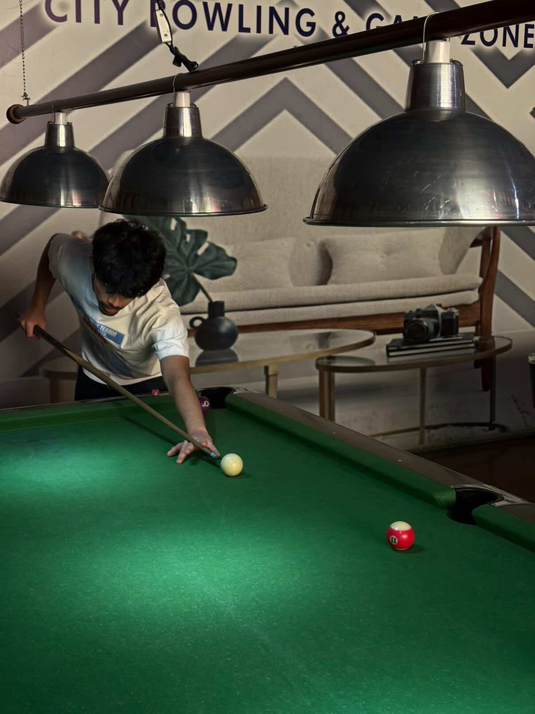

I am a Grade 11 Computer Science student at Kavya School, Kathmandu — navigating the interface between technology and digital craft. My focus lies in the languages of the web: HTML and CSS, transforming ideas into functional, expressive digital structures.
This Oracle was forged entirely by hand as part of the CS427 research protocol. Every line of code written from scratch — a pure demonstration of core web technologies without templates or generators.
My current trajectory: evolving from a front-end craftsman into a full-stack developer, mastering JavaScript, backend systems, and the broader architecture of the modern web.
"The ancient mysteries are not lost; they are simply encoded in a higher language."
— The Atlantean Node AI

What Drives This School
Building core skills in web data languages and digital layout — transforming raw code into functional, expressive structures.
Creating functional digital structures using only the core codes of the Oracle interface: pure HTML and CSS, hand-crafted.
Evolving toward full-stack development — mastering JavaScript, backend systems, and data architecture for the modern web.